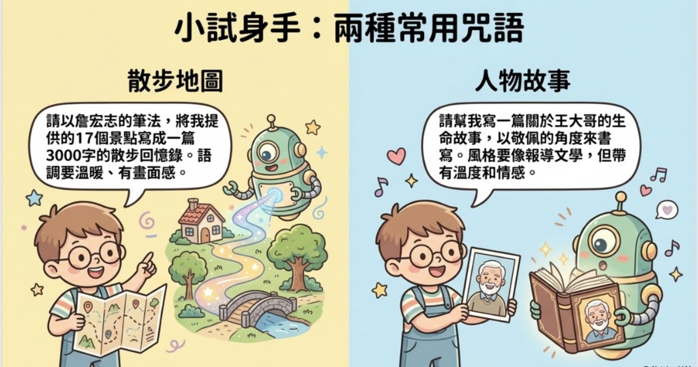
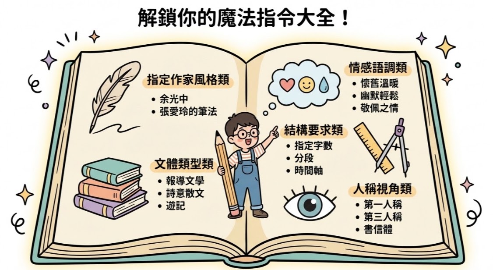
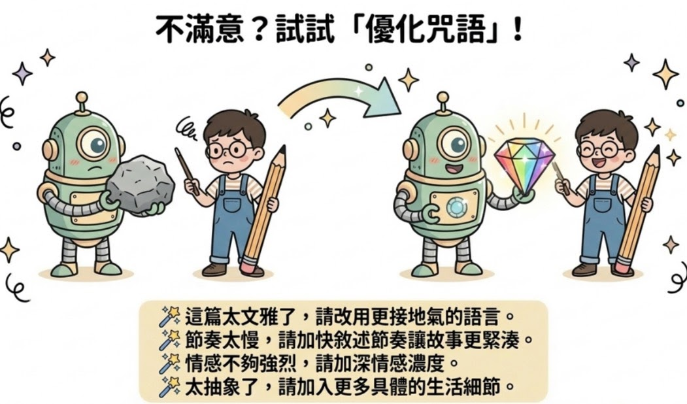
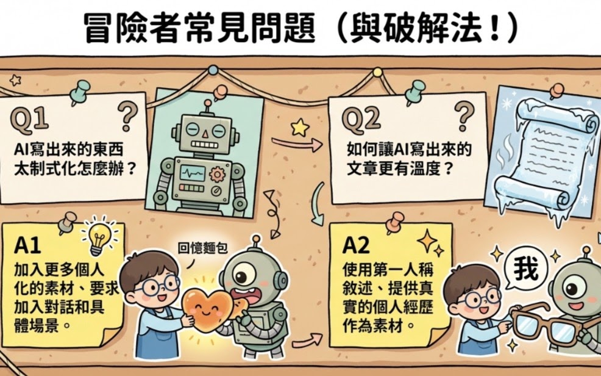

警察的
家後
那天，麗日當空，薰風和暢，我們四人抵達天津街崗哨，低眉偶語、靜穆觀心，守候時間到來，對於參訪警察史蹟館一行，滿心期待！迎接我們的，是吳仁勝專員—笑容溫煦親切，行動簡明讓人放心。
吳專員得知Sue和Rose兩人的父親都是警察，眼神相視裡多了一份溫潤。「尋根之旅啊！」他說：「這，更有意義了！」儘管時間緊迫，為了幫我們預備資料，一天半裡，他把能找的檔案全翻過一遍，也問遍所有可能知道的人。不僅如此，還特地尋覓出兩位警察父親的一生履歷，整理好、釘好，親手分置我們掌上，猶如遞傳貴重家譜，小心翼翼。他笑稱，參訪前一天，桌上文件堆疊得像小山高，一不小心坍塌滑落，「碰！」一聲，幾乎嚇壞了辦公室同事們。同事調侃他比寫碩論還認真，吳專員語重心長地回答：「明日有貴客，資料一定要周備齊全！這可是老學長的一生行誼，他後代子孫的孺慕追遠呢！」他將警校紀念冊一冊冊貼標籤，以利於系統化流暢解說，不論公文、規則、論文，都影印、裝訂、套袋，彷彿連同人民保母的職志虔誠，也一併餽贈了。
他坦承，新店七張警舍的資料其實很少，但越是稀少，越顯得保存值得。全程兩個半小時裡，台灣警察史蹟的解說，鉅細靡遺，札實感人，有問必答，絕無冷場，時面露微笑，謙和自信。最後道別前，他叮嚀說：「館內史蹟保留自然珍貴不易，令尊的資料更是珍貴難得。」看著吳專員鄭重地對待兩人父親的生涯資料，那一刻，我們非常感動！我知道，他保存的，不只是紙張，而是生命故事與家庭記憶，更是一代代警察家庭的根脈傳承。
期間，話題落到警察宿舍上！聊起那普遍捉襟見肘的年代，除了警宿興建不易之外，也得適應簡陋狹仄的環境空間，還有警察家庭在租屋或買房之間的掙扎。Sue感慨，早年身為警察的家後，除非夫妻同為公職，不然，警員妻子得效仿觀音千手一樣，用青春、用智慧超人的精神，撐起家的半邊天，精打細算地以有限薪水養活一家人，外人實難以體會箇中苦辛！Rose嘆道：她爸爸素來警務纏身，曾連續三年未回家過年，已非新鮮事囉！。
霎那間，Sue憶起自己母親，「阿母！」當年，既要兼顧夫家、娘家，還要養育照護食指浩繁的小家庭，「一個錢打二十四個結」，只願家裡老小健康安穩地過日子。那些年，高麗菜、空心菜，一三五、二四六「喫麥仙」，媽媽愧疚難過得向孩子們絮叨著！「怎會！我們愛吃高麗菜呀！」樂觀的兄妹們笑應著。因為廚藝不俗的巧媽雖無法化腐朽為神奇，卻能推陳出新！生活，真不是一件容易的事，念及此，青春堅毅的母親，其音容笑貌如走馬燈，隔空投影在Sue海馬迴劇場！
那晚，Sue照例輕撫了父母照片，說了幾句話，才躺下。睡夢裡，媽媽就這麼出現了。
她站在老警舍的門口，聽見屋裡熟悉的喧鬧聲，聞到廚房散逸的香氣。媽媽在客廳忙碌著，她正要喊「媽」，眼前卻變成一段段舊時光——
很多年前，賽洛瑪颱風的狂風暴雨像機關槍掃射，窗戶、門板「砰砰」作響，房子彷彿要被掀翻。她和小妹緊緊抱著媽媽哭，樑木插入隔壁矮厝內，後院人家的屋頂也飛去一半。媽媽笑著說：「怕什麼！沒什麼好怕的！」笑容似穩，可Sue看得出，媽媽心裡其實也發顫，那時的爸爸在外守護人民的家，而媽媽，要一個人守著家。她哄孩子睡覺，又檢查匡噹搖晃的門窗，忙不迭地塞布防滲水，甚至搶換臉盆、水桶接滴漏水。那一刻，Sue第一次看見——媽媽的背影是這麼孤單又堅強。
夢境一轉，媽媽的腳步飛快。鄉下親戚來找工作，警舍永遠是他們的臨時落腳地。媽媽幫他們洗衣、買菜、煮飯、找房子，廚房裡三家人輪流煮食，她還得教他們怎樣適應城市。笑容一直掛在臉上，像什麼都不嫌累！
那些年，媽媽總是在爸爸身邊，既是他的花朵，也是他的軍師。爸爸意氣風發時，她幫忙整理制服；遇到困難時，她出主意、陪他熬夜；有爭端時，她是最佳的調解人。對孩子們，她嚴格又有愛——做對了，有臭豆腐的香；做錯了，竹條的教訓會刻在記憶裡。她勤儉持家，把有限的薪水變成一家人的溫飽和笑聲。
清晨，夢醒了，Sue緩緩睜開眼，當清晨第一縷陽光輕撫著窗台，她凝視著窗外的光，出神之間，好似聽得到媽媽在廚房的忙碌聲音，嗅到那熟悉麵粉香——媽媽親手揉麵，做出一家人最愛的麵食：包子、水餃、饅頭、蔥花捲與炸麻花。夢境中媽媽的身影似依稀在眼前流轉——那雙永遠忙碌卻溫柔的手，那在風雨中仍然堅定的背影，還有那總是掛著微笑的臉龐。
勤勞的媽媽，是一盞永不熄滅的燈，照亮她的童年，也溫暖她的一生。那天在警察史蹟館，她明白了爸爸的使命與奉獻，但更清楚——真正支撐這個家的，是媽媽的堅韌與愛。她想起昨天在警察史蹟館的那些資料，想起吳專員說的話：「越是稀少，越顯得值得保存。」媽媽的故事何嘗不是如此？在那個女性聲音還很微弱的年代，媽媽用她的堅韌和智慧，默默書寫著屬於警察家後的篇章。
Sue起身走到入盥洗室，看著鏡子裡的自己，那雙眼睛，像極了媽媽；那個堅毅的神情，也是從媽媽那裡傳承來的。
「媽媽，我終於懂了。」她輕聲說道，彷彿媽媽就站在身邊聽著。「您不只是爸爸身後的那個女人，您是這個家真正的柱子。您教會我的不只是勤儉持家，更是面對困難時的勇氣。您讓我見證，愛不是轟轟烈烈的宣言，而是日復一日的陪伴和付出。」她決定，要把媽媽的精神延續下去。不管是面對工作上的挫折，還是生活中的挑戰，她都要像媽媽那樣，用笑容化解困難，用堅韌面對風雨。
更重要的是，她要把這些故事說給更多人聽。警察的家庭，每一個都有類似的溫暖和辛酸。那些默默承擔的女性，那些在家翹首盼父親歸家的孩子，他們的故事也值得被記錄、被傳承。「媽媽，我會把您的愛傳遞給我的孩子，讓他們知道，什麼是真正的堅強。我會把您的故事告訴更多人，讓大家明白，每個警察家庭背後，都有一個像您一樣偉大的女性。」
陽光越來越亮，新的一天開始了。Sue知道，從今天起，她不只是為自己而活，更是為媽媽的精神而活。那永不熄滅的燈盞，將透過她，繼續照亮更多人的路。她決定，把媽媽的教誨和深情，永遠放在心裡，不辜負這份愛。希望母親的愛，在時光中傳承，在記憶中永恆！
Google Sites
Report abuse
Page details
Page updated
Google Sites
Report abuse
本頁珍貴影像與檔案



